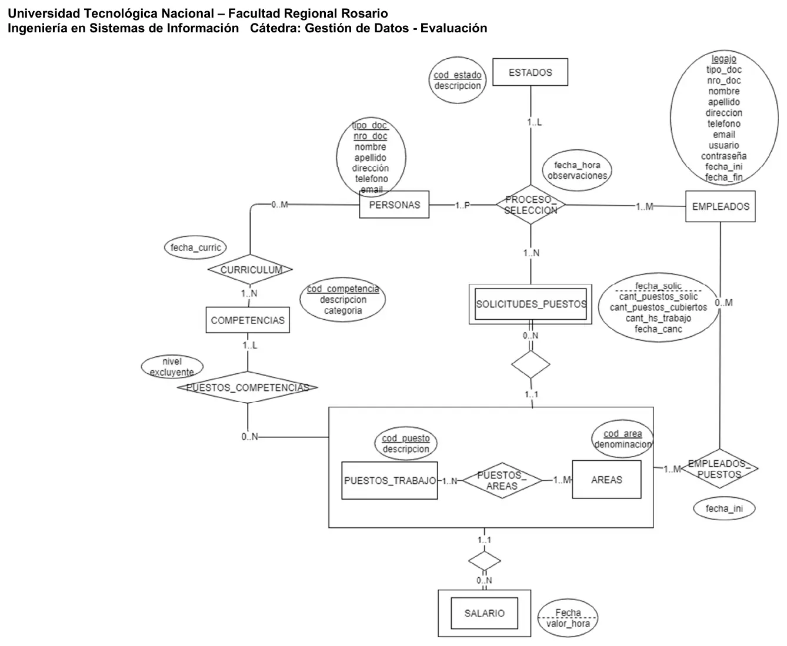
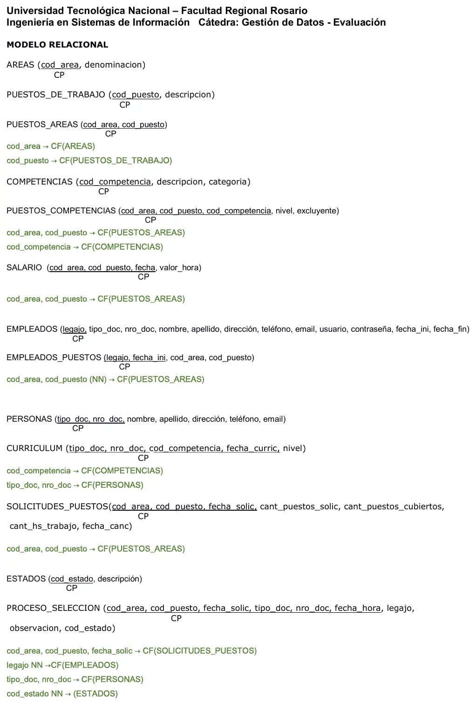

Recursos Humanos
Final
Enunciado
Evaluación del Modelo de Datos y Algebra Relacional
Modelos de Datos
- a) Esquematice el modelo E-R que se deriva de la narrativa.
- b) Transforme el modelo E-R en un Esquema relacional (pasaje a tablas), indicando los atributos de cada tabla que se derivan de la narrativa o aquellos que cree que debieran contener como mínimo las mismas, indique las claves primarias y foráneas.
Operaciones del Álgebra Relacional
- c) Desarrolle las operaciones en Algebra relacional de los Requerimientos planteados.
Una importante empresa de la ciudad nos ha contratado para que realicemos un sistema para el área de recursos humanos (RRHH).
La empresa está organizada en áreas1 para las cuáles tiene definidos diferentes puestos de trabajo2. Tiene identificadas además competencias3 que se asignan a cada área y puesto de trabajo4. Se registra además un histórico del salario5.
Cada vez que un área requiere cubrir una vacante en uno de sus puestos de trabajo, emite una solicitud6 que es registrada por alguno de los empleados7 de recursos humanos y publicada en la página web de la empresa.
Cuando una persona8 está interesada en trabajar en la empresa registra su CV9 en la página web de la empresa. Periódicamente un empleado de RRHH lanza un proceso de selección inicial que revisa si existen solicitudes de puestos de trabajo activas para las diferentes áreas (no canceladas o que no se hayan cubierto la cantidad de puestos requeridos) donde las competencias de los puestos de trabajo de las solicitudes coincidan con las competencias de las personas registradas (sobre todo las indicadas como excluyentes). Si encuentra coincidencias, el sistema registra el resultado inicial del proceso de selección10.
Finalizado el proceso se registra a la persona como empleado de la empresa indicando el puesto y área para la cual fue contratado indicando la fecha de inicio de su actividad laboral y se actualiza para la solicitud de puesto registrada la cantidad de puestos ocupados.
Reglas
- Las áreas se identifican con el código de área y poseen denominación
- Los puestos de trabajo se encuentran codificados y poseen una descripción.
- Las competencias se encuentran codificadas, tienen una descripción y una categoría (genéricas - especificas).
- Una vez definidos los puestos de trabajo en cada área se registran las competencias, el nivel de las mismas (junior, semi-senior, senior) y si son o no excluyentes para ese puesto en el área.
- Por cada puesto de trabajo de un área se registra el histórico de los salarios por hora. En cada puesto de trabajo de un área en una fecha el valor hora de trabajo es único ya que para una misma tarea se paga lo mismo a todos los empleados que la realizan.
- Se requiere mantener un histórico de las solicitudes para puestos de trabajo de cada área y para ello se registran para cada puesto de un área: la fecha de solicitud, la cantidad de empleados requeridos para el puesto, cantidad de horas de trabajo y el sueldo máximo que está dispuesto a pagar la empresa para cubrir esta vacante. En la medida que se van cubriendo los puestos se actualiza la cantidad de puestos cubiertos para la solicitud. En cualquier momento el área que realizó la solicitud puede cancelar la misma y se registra la fecha de cancelación. Si en algún momento se requiere modificar algún dato de la solicitud se cancela la solicitud actual y se registra una nueva solicitud.
- Los empleados de la empresa se identifican con un número de legajo y se registra tipo y número de documento, nombre, apellido, teléfono, email, dirección, ciudad, usuario y contraseña, fecha de inicio de su actividad laboral y fecha de finalización. Se indica además en qué puesto y área se desempeña y a partir de qué fecha en el ingreso y en cada cambio. Una persona solo puede ocupar un único puesto de trabajo en un momento determinado, pero puede haber ocupado varios puestos en diferentes áreas en la empresa.
- Las personas deben indicar tipo y número documento (con el que se las identifica), nombre, apellido, dirección, teléfono, email. Además, se les solicita indicar las competencias3 que conforman su CV9
- Una persona puede registrar su CV (curriculum vitae) en diferentes momentos, cada vez que lo registra indica sus competencias y el nivel de las mismas y el sistema las registra con la fecha del día (NOTA: puede suceder que en diferentes momentos la persona repita competencias, por ejemplo, porque cambió el nivel, y éstas deben registrarse).
- Durante el proceso de selección se registran: solicitud de puesto para el área, empleado que realiza el proceso, persona seleccionada, fecha del registro, observaciones y estado8. El proceso de selección puede pasar por varios estados (iniciado, entrevistas,…, contrato, rechazo) hasta que la persona es contratada o rechazada. En un momento determinado el proceso de selección está en un único estado. Cada uno de estos registros es realizado por un único empleado de RRHH. Una misma persona puede ser evaluada en muchos procesos de selección para diferentes puestos de trabajo en un mismo momento.
- Los estados están codificados y de los mismos se registra una descripción
Requerimientos
- a) Se requiere conocer de las personas que enviaron curriculums quiénes indicaron las mismas competencias excluyentes que se requieren para el área: ‘Producción’, puesto: ‘operario’ y que no hayan sido contratados nunca por la empresa.
- b) Listar qué áreas han realizado solicitudes para sus puestos de trabajo durante el año 2017 y no lo han hecho durante el 2018.
Evaluación de Bases de Datos Relacionales
Todas las operaciones que realice deben copiarse a un archivo que será entregado una vez completado el examen. El nombre del archivo deberá tener la forma: APELLIDO_NOMBRE.sql
DDL
- (Esta consigna es eliminatoria). Desarrolle las sentencias DDL requeridas para completar la definición de la tabla PROCESO_SELECCION Copie el DDL que se obtiene con la herramienta al archivo a entregar.
DML
- Indicar de los empleados que actualmente trabajan en el área de RRHH, de cuántas personas han realizado registro en el proceso de selección en el presente año. Mostrar Legajo, apellido y nombres del empleado y cantidad de personas de las que han realizado registro en el proceso de selección. Aquellos empleados que actualmente trabajan en el área de RRHH y que no han hecho registro en el proceso de selección listarlos con cantidad en cero.
NOTAS:
- para saber donde trabajan los empleados actualmente buscar el último cambio de puesto del empleado a la fecha de hoy y luego verificar si el empleado trabaja en el área de RRHH en ese cambio.
- para la cantidad de personas se cuentan las distintas personas para las cuales el empleado de RRHH tiene registros en la tabla proceso de selección.)
- Ranking de solicitudes para puestos de trabajo indicando: código y denominación del área, código y descripción del puesto de trabajo, cantidad de solicitudes registradas, porcentaje de solicitudes por puesto sobre la cantidad total de solicitudes registradas y suma de las cantidades de puestos solicitados. Ordenar el ranking en forma descendente por porcentaje de solicitudes.
NOTA: el porcentaje deberá calcularse con solo dos dígitos decimales.
- STORE PROCEDURE (SP): Desarrollar un SP para el registro inicial del proceso de selección, recibiendo como parámetros la fecha del día y el legajo del empleado que lanza el proceso.
Tener en cuenta que para cada solicitud de puesto de trabajo activa (no tiene fecha de cancelación) se deberán registrar las personas que continuarán luego el proceso de selección:
Las personas seleccionadas:
- No deben ser o haber sido empleados de la empresa
- No deben estar participando ya del proceso de selección para la solicitud
- Debe haber una coincidencia en al menos dos de las competencias requeridas para el puesto de trabajo como excluyentes y las competencias que la persona incluyó en su curriculum.
Recordar que el estado para estos registros será: Iniciado.
TCL
- Registrar los nuevos valores hora para los puestos de trabajo para ser aplicados a partir del primer día del mes que viene. Los nuevos valores tendrán el siguiente incremento: para aquellos valores hora menores a $150 se realizará un incremento del 25%, para los mayores o iguales a $150 el incremento será de un 20%.
Resolución
Ver la resolución: DER, pasaje a tablas y SQL
Son las hojas originales. Tocá una para verla en grande.




SQL
--- 2
select a.cod_area INTO @area
FROM areas a
where a.denominacion = 'RRHH';
drop temporary table if exists TTempleados_fecha;
create temporary table TTempleados_fecha(
select legajo, max(ep.fecha_ini) 'fecha'
from empleados_puestos ep
where ep.fecha_ini <= current_date()
group by 1);
SELECT tt.legajo, e.apellido, e.nombre, count(distinct(concat(ps.tipo_doc, ps.nro_doc))) cantidad
FROM TTempleados_fecha tt
INNER JOIN empleados_puestos ep
ON ep.legajo = tt.legajo
AND ep.fecha_ini = tt.fecha
INNER JOIN empleados e
ON e.legajo = tt.legajo
LEFT JOIN proceso_seleccion ps
ON ps.legajo = tt.legajo
WHERE ps.fecha_hora >= '01-01-2018'
AND ep.cod_area = @area
GROUP BY 1,2,3;
-- 3
SELECT count(*) INTO @cant_solic
FROM solicitudes_puestos sp;
SELECT sp.cod_area, a.denominacion, sp.cod_puesto, pt.descripcion, COUNT(*), round(COUNT(*) * 100 / @cant_solic,2) '% Solic',
SUM(sp.cant_puestos_solic) 'Cant.Puestos'
FROM solicitudes_puestos sp
INNER JOIN areas a
ON a.cod_area = sp.cod_area
INNER JOIN puestos_de_trabajo pt
ON pt.cod_puesto = sp.cod_puesto
group by 1,2,3,4
ORDER BY 5 desc;
-- 4
USE `recursos_humanos`;
DROP procedure IF EXISTS `procesoseleccion_ri`;
DELIMITER $$
USE `recursos_humanos`$$
CREATE PROCEDURE `procesoseleccion_ri` (in wfecha datetime, in wlegajo int)
BEGIN
select e.cod_estado INTO @westado from estados e;
INSERT INTO proceso_seleccion
SELECT sp.cod_area, sp.cod_puesto, sp.fecha_solic, c.tipo_doc, c.nro_doc, wfecha, wlegajo, '', westado
FROM solicitudes_puestos sp
INNER JOIN puestos_competencias pc
ON pc.cod_area = sp.cod_area
AND pc.cod_puesto = sp.cod_puesto
INNER JOIN curriculum c
ON c.cod_competencia = pc.cod_competencia
LEFT JOIN empleados e
ON e.tipo_doc = c.tipo_doc
AND e.nro_doc = c.nro_doc
LEFT JOIN proceso_seleccion ps
ON ps.cod_area = sp.cod_area
AND ps.cod_puesto = sp.cod_puesto
AND ps.fecha_solic = sp.fecha_solic
and ps.tipo_doc = c.tipo_doc
AND ps.nro_doc = c.nro_doc
WHERE sp.fecha_canc is not null
AND pc.excluyente = 'SI'
AND ps.legajo is null
AND ps.nro_doc IS NULL
group by 1,2,3,4,5
having count(distinct(c.cod_competencia)) >= 2;
END$$
DELIMITER ;
SELECT
sp.cod_area,
sp.cod_puesto,
sp.fecha_solic,
c.tipo_doc,
c.nro_doc,
COUNT(DISTINCT (c.cod_competencia))
FROM
solicitudes_puestos sp
INNER JOIN
puestos_competencias pc ON pc.cod_area = sp.cod_area
AND pc.cod_puesto = sp.cod_puesto
INNER JOIN
curriculum c ON c.cod_competencia = pc.cod_competencia
WHERE
sp.fecha_canc IS NOT NULL
AND pc.excluyente = 'SI'
AND CONCAT(c.tipo_doc, c.nro_doc) NOT IN (SELECT CONCAT(e.tipo_doc, e.nro_doc)
FROM empleados e)
AND CONCAT(c.tipo_doc, c.nro_doc) NOT IN (SELECT CONCAT(ps.tipo_doc, ps.nro_doc)
FROM proceso_seleccion ps
WHERE ps.cod_area = sp.cod_area
AND ps.cod_puesto = sp.cod_puesto
AND ps.fecha_solic = sp.fecha_solic)
group by 1,2,3,4,5
having count(distinct(c.cod_competencia)) >= 2;
-- 4
start transaction;
drop temporary table if exists TTsalarios_fecha;
create temporary table TTsalarios_fecha(
select s.cod_area, s.cod_puesto, max(s.fecha) 'fecha'
from salario s
where s.fecha <= current_date()
group by 1,2);
INSERT INTO salario
SELECT tt.cod_area, tt.cod_puesto, '01-03-2018', round(s.valor_hora * 1.25,2)
FROM ttsalarios_fecha tt
INNER JOIN salario s
ON s.cod_area = tt.cod_area
and s.cod_puesto = tt.cod_puesto
AND s.fecha = tt.fecha
WHERE s.valor_hora >= 150;
INSERT INTO salario
SELECT tt.cod_area, tt.cod_puesto, '01-03-2018', round(s.valor_hora * 1.20,2)
FROM ttsalarios_fecha tt
INNER JOIN salarios s
ON s.cod_area = tt.cod_area
and s.cod_puesto = tt.cod_puesto
AND s.fecha = tt.fecha
WHERE s.valor_hora < 150;
commit;¿Cómo te fue?
Marcá cada tema del examen.
- DERDe la narrativa al DER, en 1° parcial
- PasajePasaje a tablas, en 1° parcial
- ÁlgebraÁlgebra relacional, en 1° parcial
- SQLSQL para la práctica, en 2° parcial